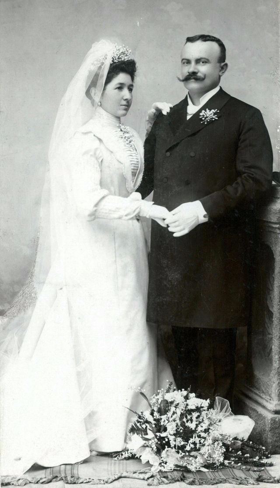
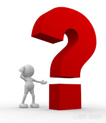
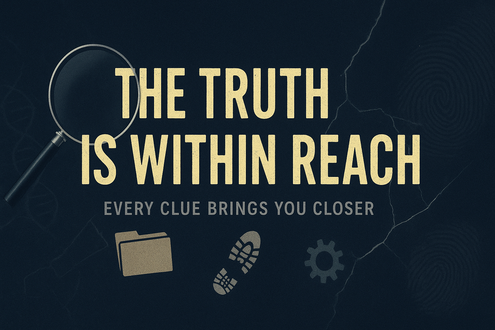

规则： 限制性定语从句的作用是像侦探一样，准确限定你要找的那个人。根据线索，从所有嫌疑人中筛选出4名最有可能的潜在嫌疑犯。
犯罪现场发现的4大线索
- 🚩线索 1： 门口有一把湿泥土。
- 🚩线索 2：现场留有一颗珍珠耳环。
- 🚩线索 3：门把手上留有油腻的指纹。
- 🚩线索 4：在地毯下发现一个玩具车的轮子。
💡 鼠标悬停在上方图片上，放大镜将跟随你的目光移动，观察线索。
任务：用定语从句锁定4名潜在嫌疑犯 (多选)
GARDENER
Who am I？
A person who works with soil daily was seen near the main entrance.
MAID
Who am I？
A person that wore a clean uniform today claims she heard nothing.
MISTRESS
Who am I？
A person whose expensive dress could pay for ten days’ meals for an ordinary family had no alibi（不在场证明）.
BUTLER
Who am I？
The Butler, who has served the family for 30 years, was very calm.
SON
Who am I？
A child who constantly plays with race cars was found to be asleep in his room.
DAUGHTER
Who am I？
The daughter，whose room is decorated all pink，was seen studying.
CHEF
Who am I？
A man who often handles food with greasy（油腻的） hands was preparing a late-night meal.
翻开塔罗牌：限制性定语从句的奥秘
范围
范围限定
缩小主语范围，限定是“哪一个”或“哪个种类”。
重要性
不可或缺
提供决定性信息。没有它，句子意思不完整或不准确。
分隔符
禁止逗号
信息太重要，必须与主句紧密相连。不能用逗号隔开。
核心法则：
1. 明确的对象（如具体的城市名、具体时间点）：需要逗号（非限制性），因为大家都知道是哪。
2. 模糊的对象（如 the place, the time）：不需要逗号（限制性），需要从句来告诉你是哪一个。
3. Why (原因)：永远不需要逗号。
任务：验证嫌疑人的不在场证明
嫌疑人有些紧张，他们的证词中隐藏着语法错误。请点击语法正确的句子来通过测谎仪。如果不符合上述法则，那就是“谎言”！
她提到了地点 (Where) 和原因 (Why)。哪句是真话（语法正确）？
关于原因：
他提到了时间 (When) 和地点 (Where)。哪句是真话？
关于躲藏地点：
他提到了原因 (Why) 和时间 (When)。哪句是真话？
关于入职时间：
他提到了原因 (Why) 和地点 (Where)。哪句是真话？
关于所在位置：
📜 侦探语法档案：关系词完全手册
这是本次案件的关键语法线索，请务必记录！
| 关系词 |
先行词 (修饰对象) |
逗号规则 (关键!) |
例句 |
| Who |
人 (Person) |
明确的人 → 加逗号
泛指的人 → 不加逗号 |
Mr. Black, who...
The man who... |
| That |
人 / 物 |
❌ 永远不加逗号 |
The clue that I found... |
| Which |
物 (Thing) |
明确的物 → 加逗号
泛指的物 → 不加逗号 |
The diary, which...
The book which... |
| Where |
地点 (Place) |
明确地点 (Paris, My room) → ✅ 加逗号
模糊地点 (The place) → ❌ 不加逗号 |
Beijing, where I live...
The city where I live... |
| When |
时间 (Time) |
明确时间 (1990, Midnight) → ✅ 加逗号
模糊时间 (The day) → ❌ 不加逗号 |
Yesterday, when I...
The day when I... |
| Why |
原因 (Reason) |
❌ 永远不加逗号 |
The reason why... |
⚖️ 逗号的审判：限制还是非限制？
📌 阶段三：选择正确的标点，区分定语从句的类型
任务： 请判断每组句子中，哪一句的逗号使用是**正确**的。
💡 回忆：逗号隔开的是**可省略**的补充信息。
1. 限定信息 (不可省略)
A. The knife, which was used in the crime, was left on the table.
B. The knife which was used in the crime was left on the table.
2. 补充信息 (可省略)
A. My car, which is black and old, is parked outside.
B. My car which is black and old is parked outside.
3. 人物限定 (多位嫌疑犯)
A. The witnesses who told the truth were protected by the police.
B. The witnesses, who told the truth, were protected by the police.
4. 专有名词 (独一无二)
A. The famous detective Poirot who solved the case arrived yesterday.
B. The famous detective Poirot, who solved the case, arrived yesterday.
🔍 限制性 vs. 非限制性：再对比
|
❌ 限制性 (定范围) |
⭕ 非限制性 (添补充) |
| **逗号** |
**无逗号** |
**有逗号** (将从句括起来) |
| **That** |
✅ 可用 That |
❌ 禁用 That |
📝 侦探的笔迹：定语从句写作挑战
📌 阶段四：小侦探写句子（无逗号与有逗号）
任务： 请根据线索和要求，完成句子中的定语从句部分。
💡 注意：**限制性 (无逗号)** 需精确限定目标；**非限制性 (有逗号)** 需补充背景信息。
🖋️ 任务 3：描述这个屋子
线索提示： 曾经住过的地方，曾经出过事的地方，曾经某个人发生过什么...
🖋️ 任务 4：补充时间

线索提示： 1899年两人结婚的时候，发生了什么呢？
要求： 补充信息
🖋️ 任务 5：限定原因

线索： ....的原因
🔪 最终挑战：推理与语法并进
📌 阶段五：实战演练 — 锁定真正的凶手
教学目标： 运用所学知识，判断给定定语从句的类型，并进行推理。

判断任务 (选择：限制性 / 非限制性)
推理卡 A：The witness who saw the whole murder is now under police protection.
限制性 (Defining)
非限制性 (Non-Defining)
推理卡 B：The victim's brother, who arrived late, was interviewed.
限制性 (Defining)
非限制性 (Non-Defining)
推理卡 C：The house, which is very old, was built in 1920.
限制性 (Defining)
非限制性 (Non-Defining)
【最终定论】: This is the piece of jewelry that the mistress wore on that night.
限制性 (Defining)
非限制性 (Non-Defining)
真相只有一个！